Replacement scientific figures from the accepted 15-hour calculations. Click an image to view the full-resolution PNG. Captions and verification details accompany this collection.
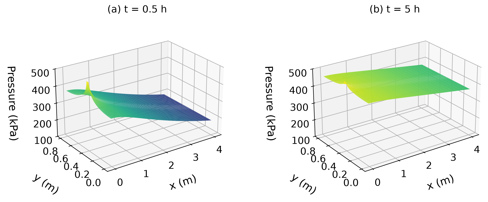
Pressure surfaces at 0.5 h (a) and 5 h (b), with ambient downstream pressure 100 kPa and inlet pressure 500 kPa.
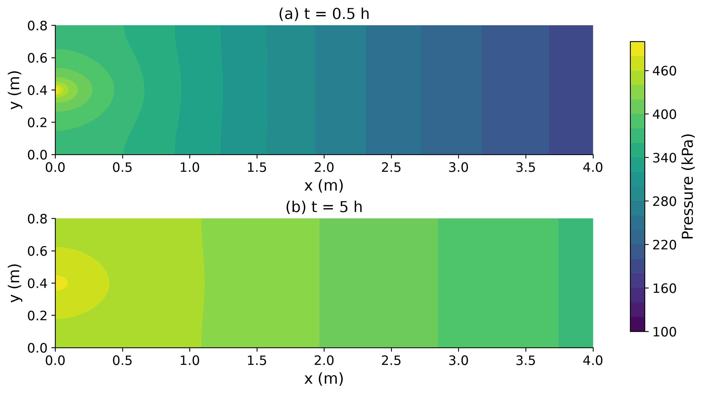
Pressure contours at 0.5 h (a) and 5 h (b). The displayed interval is 0-4 m; the downstream numerical boundary is at 64 m.
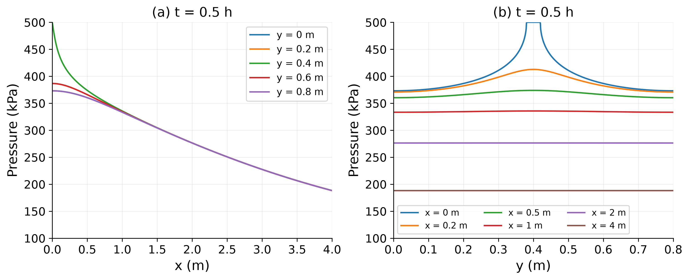
Pressure cross sections at t = 0.5 h: longitudinal profiles at selected y coordinates (a) and transverse profiles at selected x coordinates (b).
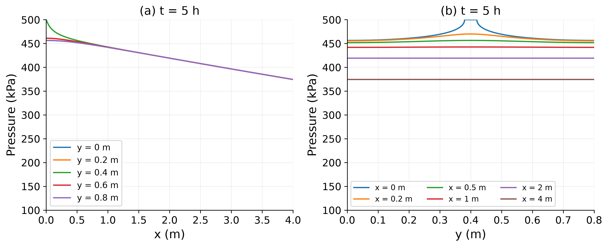
Pressure cross sections at t = 5 h: longitudinal profiles at selected y coordinates (a) and transverse profiles at selected x coordinates (b).
Concentration surfaces at 15 h for constant inlet and constant dispersion. The displayed x interval is 0-2 m; the computation extends to 64 m.
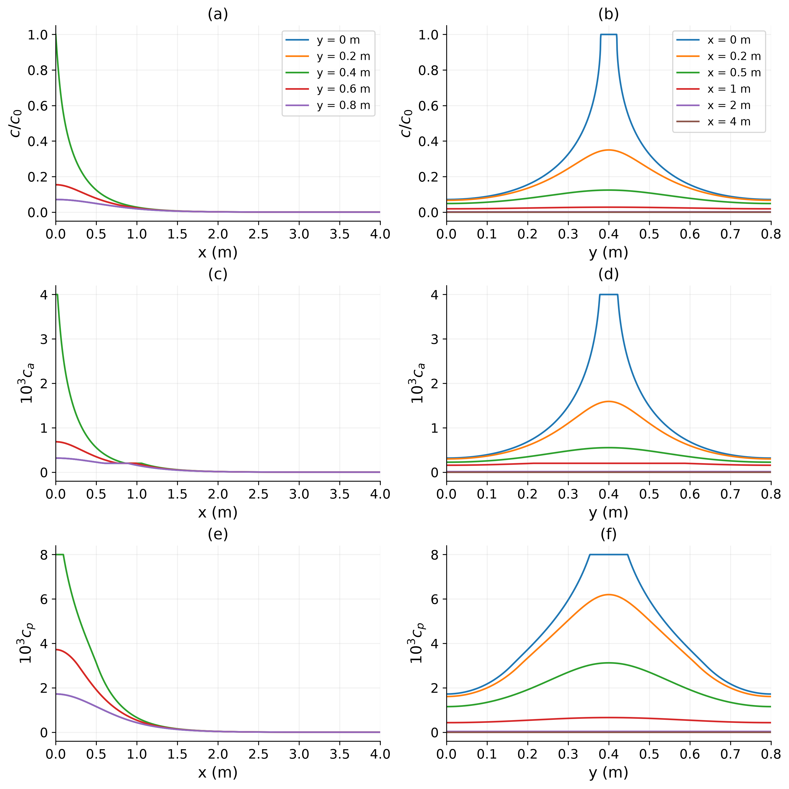
Cross sections at 15 h for constant dispersion and constant inlet concentration. Dissolved concentration c (a,b), adsorbed concentration ca (c,d), and adsorbed concentration cp (e,f). Left panels show longitudinal profiles; right panels show transverse profiles. The coordinate legends in (a) and (b) apply to all rows.
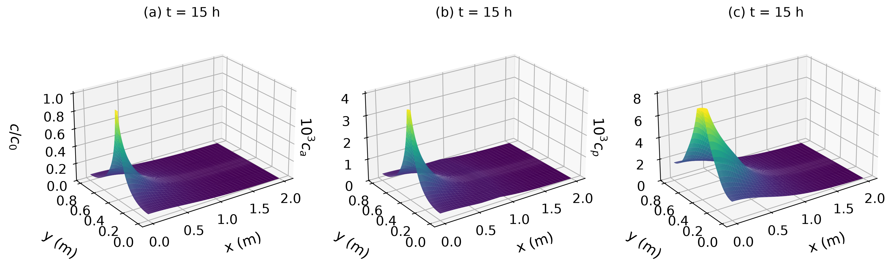
Concentration surfaces at 15 h for exponential inlet with phi = 0.001 s^-1 and constant dispersion. The displayed x interval is 0-2 m; the computation extends to 64 m.
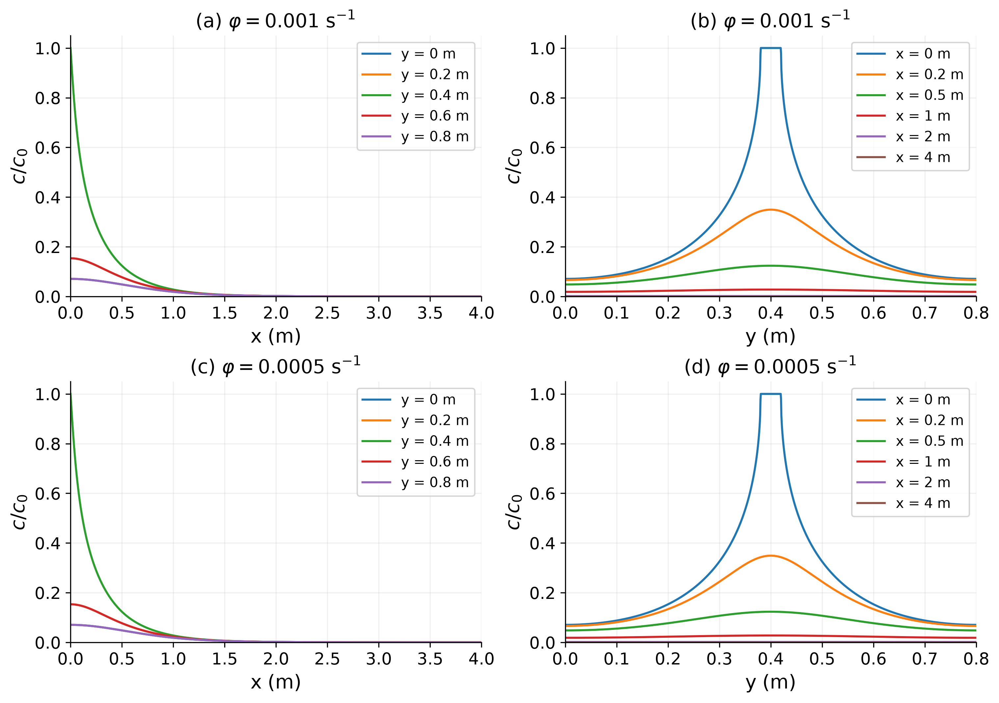
Cross sections of c at 15 h under exponential inlet histories with phi = 0.001 s^-1 (a,b) and 0.0005 s^-1 (c,d), using constant dispersion. Left panels show longitudinal profiles; right panels show transverse profiles.
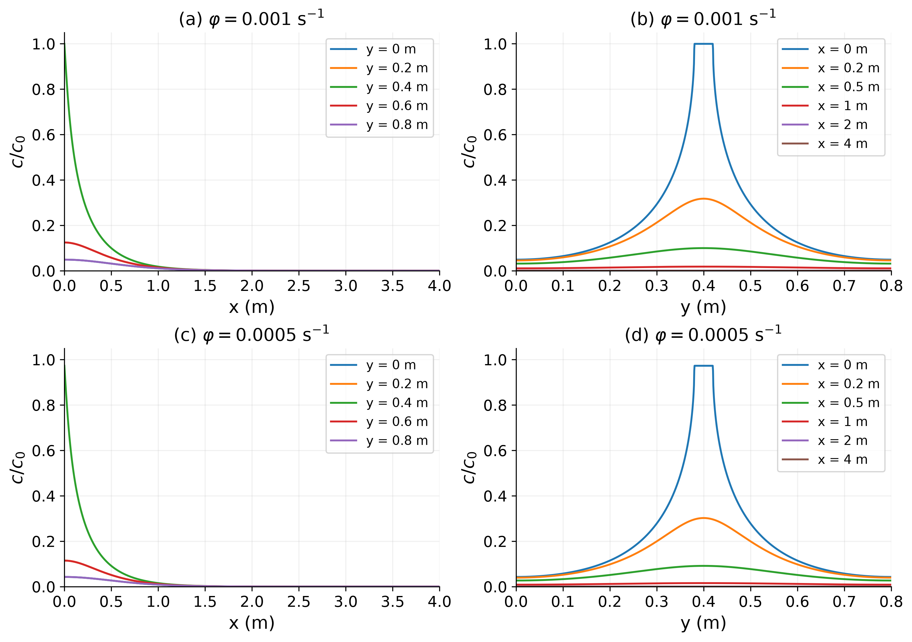
Cross sections of c at 2 h under exponential inlet histories with phi = 0.001 s^-1 (a,b) and 0.0005 s^-1 (c,d), using constant dispersion. Left panels show longitudinal profiles; right panels show transverse profiles.
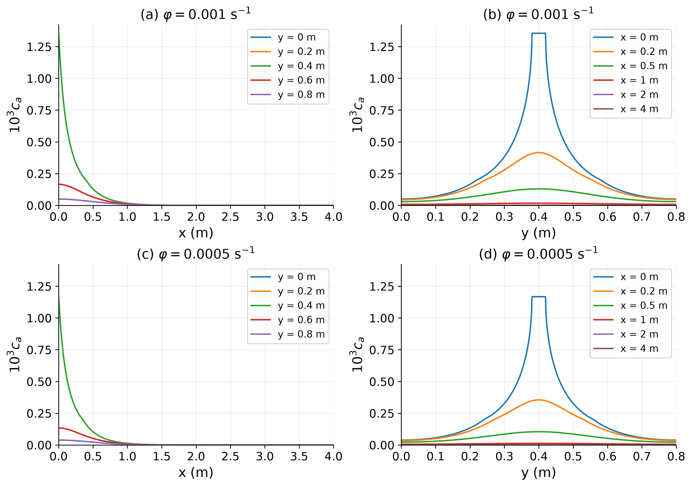
Cross sections of ca at 2 h under exponential inlet histories with phi = 0.001 s^-1 (a,b) and 0.0005 s^-1 (c,d), using constant dispersion. Left panels show longitudinal profiles; right panels show transverse profiles.
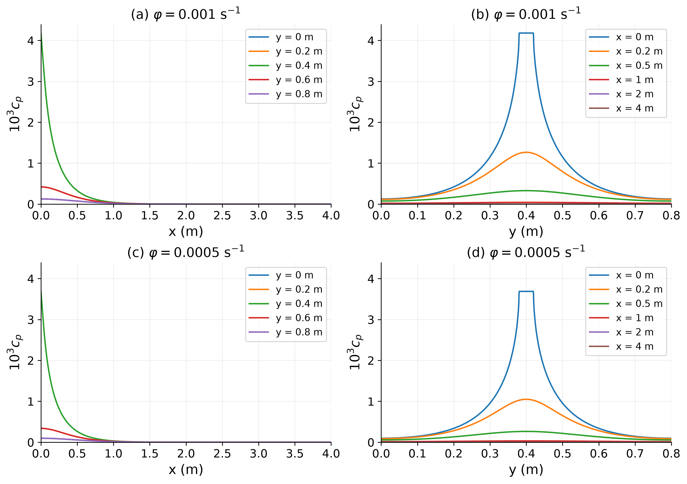
Cross sections of cp at 2 h under exponential inlet histories with phi = 0.001 s^-1 (a,b) and 0.0005 s^-1 (c,d), using constant dispersion. Left panels show longitudinal profiles; right panels show transverse profiles.
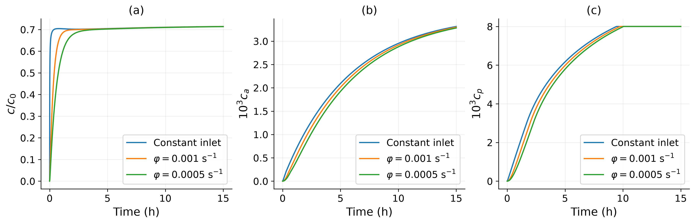
Time evolution at (x,y) = (0.05,0.4) m for constant and exponential inlet histories. All histories are sampled at this same physical point.
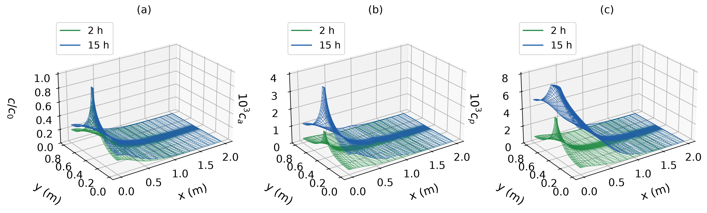
Variable-dispersion concentration surfaces under constant inlet concentration at 2 h (green) and 15 h (blue).
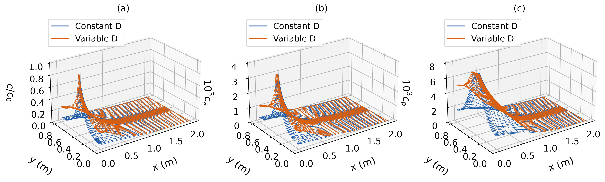
Comparison of constant anisotropic dispersion and spatially variable scalar dispersion under constant inlet concentration at 15 h. Blue: constant dispersion. Orange: variable dispersion.
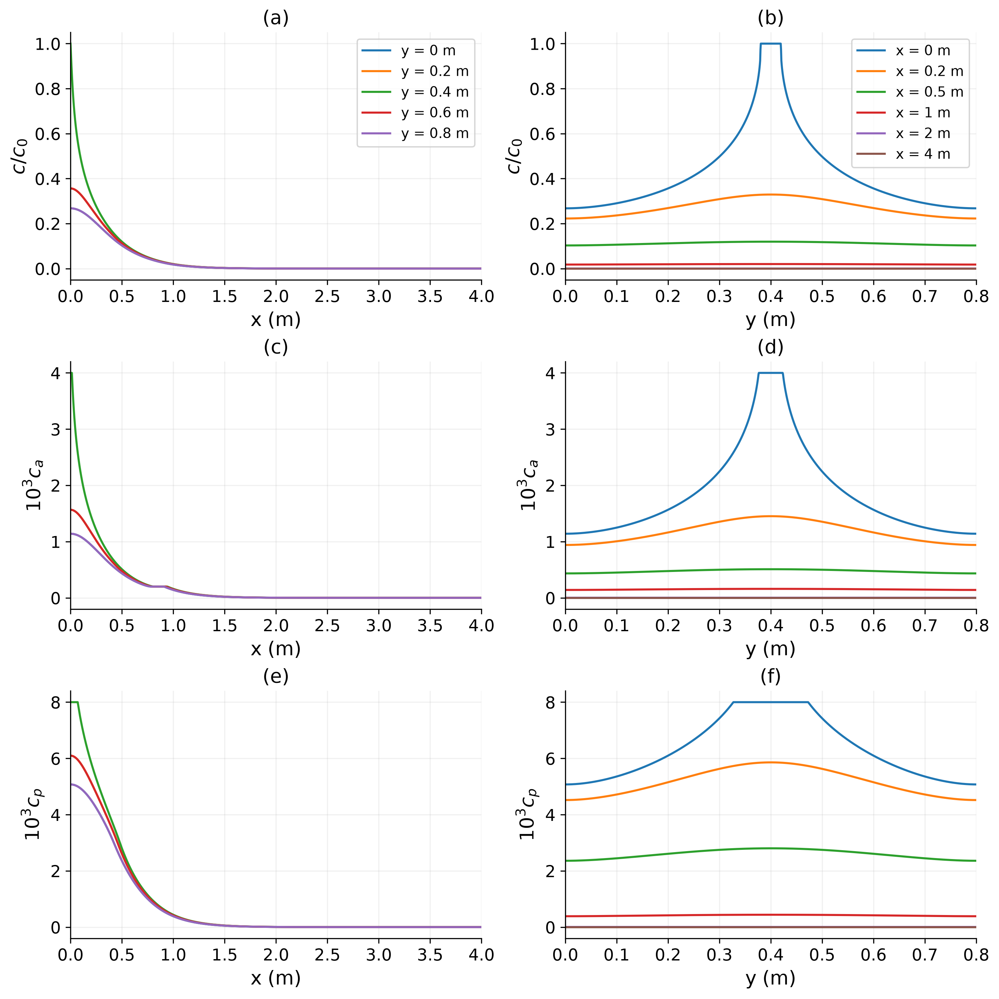
Cross sections at 15 h for variable dispersion and constant inlet concentration. Dissolved concentration c (a,b), adsorbed concentration ca (c,d), and adsorbed concentration cp (e,f). Left panels show longitudinal profiles; right panels show transverse profiles. The coordinate legends in (a) and (b) apply to all rows.